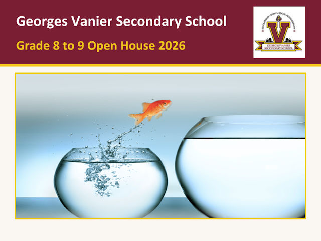
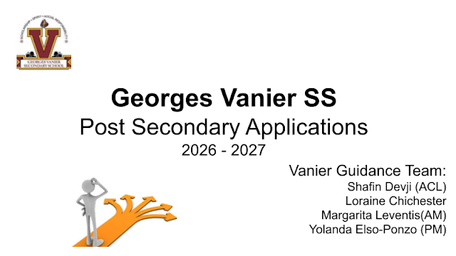
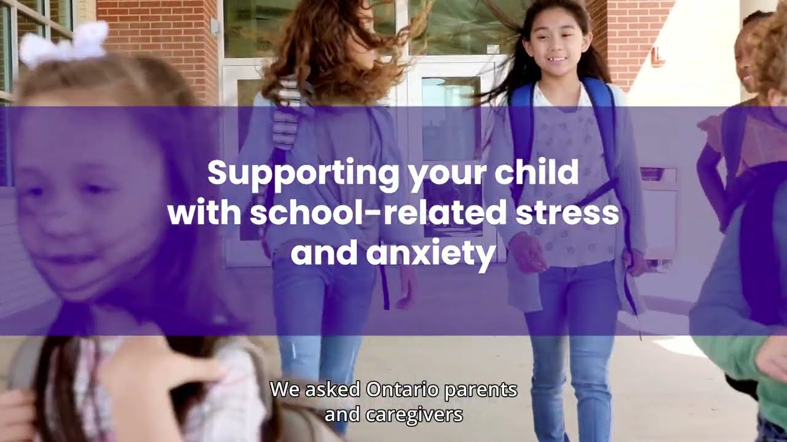

Georges Vanier's strength is our diverse community. Our Guidance team is dedicated to being your pillar of support. We collaborate closely with families to open doors to new opportunities, connect students with vital resources, and confidently guide them toward their post-secondary success.
For Grade 9 students & families
Lunch · Cafeteria
For Grade 9 students
Gym 1

For Grade 8 students and families — programs, course selection, and what to expect in Grade 9.
View the slides
Applying to university, college, or an apprenticeship for 2026–2027 — the full session from the Guidance team.
View the slidesEverything you need to choose courses, meet graduation requirements, and stay on path toward your goals.
Every Ontario student needs a minimum of 40 hours of community involvement to graduate. Volunteer beyond that and you can earn the Minister's Certificate of Recognition for Community Involvement, awarded at graduation:
The certificate can help you stand out when applying for jobs, college or university programs, apprenticeships, and scholarships.
Getting started guide (PDF) • Hours tracking form (PDF) • Volunteer hours & recognition (ontario.ca)
Whatever your path — a four-year degree, college, a trade, or straight into the workforce — these resources will help you get there.
Key dates for current Ontario high school students applying through the OUAC for Fall 2027 admission (2026–27 cycle).
Applications to all of Ontario's public colleges go through one central service: ontariocolleges.ca. These dates repeat every application cycle.
TDSB automatically sends your courses and marks to OCAS (colleges) and OUAC (universities) at set points in the application cycle — you don't need to send transcripts yourself. Key dates for the 2026–27 cycle:
Marks must be finalized at the school before each date — if a mark looks wrong or is missing, see your counsellor right away.
Most US colleges accept the Common Application. Deadlines vary by college — always confirm on each college's admissions page. US applications usually involve essays, teacher recommendations, and sometimes SAT/ACT scores, so start early and see your counsellor.
Ontario's provincial program of loans and grants for college and university students.
Full, upfront funding for tuition, books, and other direct educational costs if you enrol in an eligible health-care program in a priority community — college pathways (practical nursing, paramedic, medical laboratory technology) and university pathways (nursing degrees) both qualify. In return, you commit to working in the region where you studied after graduation. Applications go through OSAP.
Your well-being comes first. Whether you need someone to talk to or you're supporting a friend, help is always available.
Ten strategies for newcomer students, by newcomer students. Tap any card to enlarge it.
Created by School Mental Health Ontario.
Resources written for families, from School Mental Health Ontario.

Watch: Supporting your child with school-related stress and anxietyVideo · School Mental Health OntarioFree, confidential supports outside of school — many offer phone, text, or chat.
If you or someone you know is struggling, you are not alone. Reach out immediately — these lines are free, confidential, and available 24/7. If there is an emergency, call your local emergency number.
Have a question? Here's how to reach us.